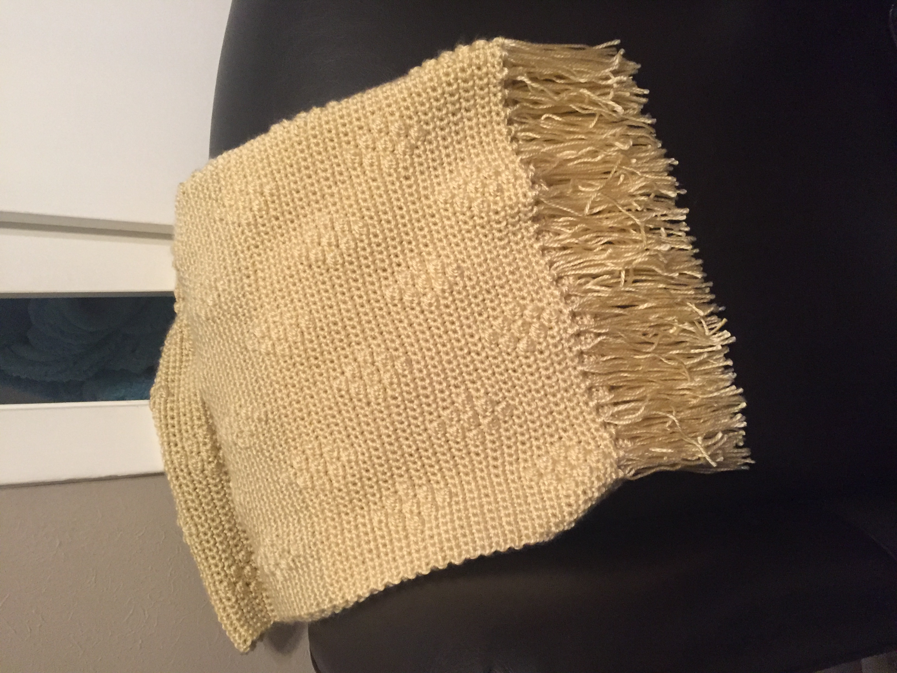
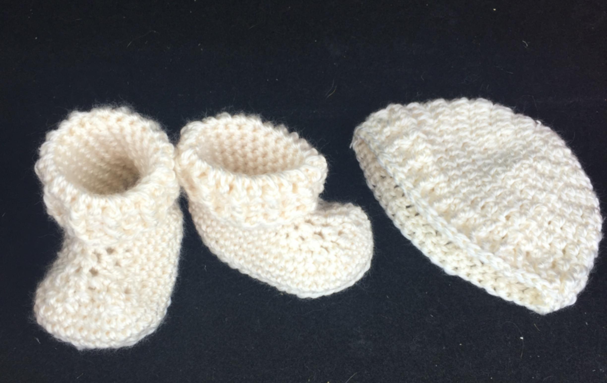

My Favorite Projects
These are just 3 of my favorite projects that I have created
Crochet Diamond Berry Stitch Blanket
This project was so fun to make, and it only took me a week to complete this simple pattern I highly recommend!!! I've added the link here if anyone else would like to try their hand at making it. Enjoy!
The ‘Rainbow’ Ripple Baby Blanket
 This project was less simple, but is it striking. I love the variation of colors. You can do so many combinations to create really beautiful effects. Sadly, this is only for toddlers but one day I would like to make an adult version. Here is the link for the pattern!
This project was less simple, but is it striking. I love the variation of colors. You can do so many combinations to create really beautiful effects. Sadly, this is only for toddlers but one day I would like to make an adult version. Here is the link for the pattern!
The Parker Hat and Booties
These are just so dang cute I can’t even stand it! They are really, really tiny, you wonder how they would ever fit on a newborn, but they are the perfect size for just that. I am also told that the booties are the only thing to stay on a newborns’ feet, since babies like to try everything to get unbundled. The pattern for these can be found here.